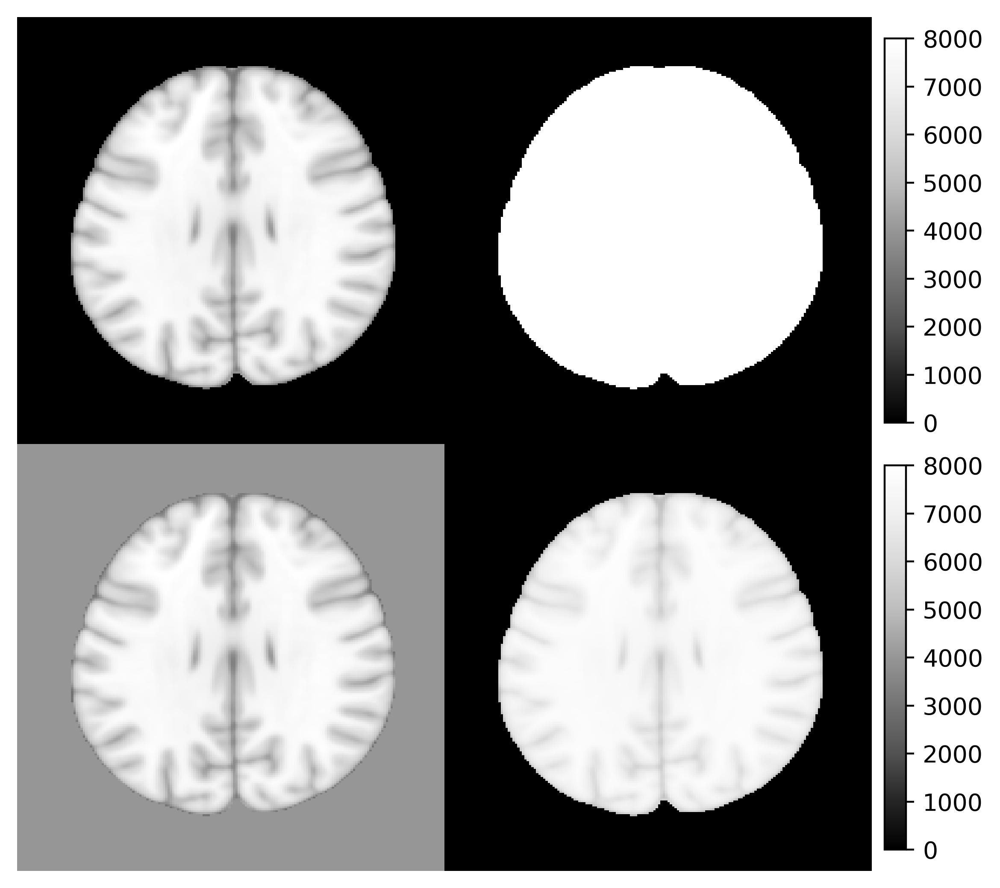

rpyANTs was detached from a RAVE (Reproducible Analysis and Visualization of iEEG) module. It is now a standalone package that connects ANTsPy with R using seamless shared-memory.
This package was originally created for the following three purposes:
- Portability
- Make
ANTseasily accessible from the latest R and all major operating systems - Allow
RAVEor other code/scripts/frameworks to be reproducible since the code will be OS-invariant
- Make
- Easy to install
- Automated installation that requires very little to no knowledge about compilers
- Installing
rpyANTstakes less than 10 minutes - The goal is to have minimum human intervention
- Easy to embed
- Python scripts using
ANTsPycan be executed fromrpyANTsand R with no modification - Built-in bilateral data conversions between Python and R allows image generated from Python to be analyzed/visualized in R and vice versa
- Python scripts using
Disclaimer: This is a third-party maintained R package for
ANTs. If you are looking for theANTsRpackage byB.B Avants, please check here.
Installation
The installation requires one-line extra setup
# Install from CRAN
install.packages("rpyANTs")
# Install from nightly dev builder
# install.packages("rpyANTs", repos = "https://dipterix.r-universe.dev")
# set up ANTs
rpyANTs::install_ants()install_ants creates an isolated Python environment managed by RAVE. This environment does not conflict nor affect your existing Python installations.
Upgrade ANTs
To upgrade ANTs, first update rpyANTs, then upgrade ANTsPyx
install.packages("rpyANTs")
rpymat::add_packages(packages = "antspyx", pip = TRUE)How to use
To load ANTs
library(rpyANTs)
# Whether ANTs is available
ants_available()
# Load ANTs into R
antsIn R, we use $ to get module functions or class members. For example:
ants$add_noise_to_image
#> <ANTs Python Wrapper>
#> Help on function add_noise_to_image in module ants.ops.add_noise_to_image:
#>
#> add_noise_to_image(image, noise_model, noise_parameters)
#> Add noise to an image using additive Gaussian, salt-and-pepper,
#> shot, or speckle noise.
#>
#> Arguments
#> ---------
#> image : ANTsImage
#> scalar image.
#>
#> noise_model : string
#> 'additivegaussian', 'saltandpepper', 'shot', or 'speckle'.
#>
#> noise_parameters : tuple or array or float
#> 'additivegaussian': (mean, standardDeviation)
#> 'saltandpepper': (probability, saltValue, pepperValue)
#> 'shot': scale
#> 'speckle': standardDeviation
#>
#> Returns
#> -------
#> ANTsImage
#>
#> Example
#> -------
#> >>> import ants
#> >>> image = ants.image_read(ants.get_ants_data('r16'))
#> >>> noise_image = ants.add_noise_to_image(image, 'additivegaussian', (0.0, 1.0))
#> >>> noise_image = ants.add_noise_to_image(image, 'saltandpepper', (0.1, 0.0, 100.0))
#> >>> noise_image = ants.add_noise_to_image(image, 'shot', 1.0)
#> >>> noise_image = ants.add_noise_to_image(image, 'speckle', 1.0)
#>
#> *** Above documentation is for Python.
#> *** Please use `$` instead of `.` for modules and functions in R
#> <function add_noise_to_image at 0x163af8360>
#> signature: (image, noise_model, noise_parameters)The following R code translates Python code into R:
# >>> img = ants.image_read(ants.get_ants_data('r16'))
img <- ants$image_read(ants$get_ants_data('r16'))
# >>> noise_image1 = ants.add_noise_to_image(img, 'additivegaussian', (0.0, 1.0))
noise_image1 <- ants$add_noise_to_image(
img, 'additivegaussian',
noise_parameters = tuple(0.0, 1.0)
)
# >>> noise_image2 = ants.add_noise_to_image(img, 'saltandpepper', (0.1, 0.0, 100.0))
noise_image2 <- ants$add_noise_to_image(
img, 'saltandpepper',
noise_parameters = tuple(0.1, 0.0, 100.0)
)
# >>> noise_image3 = ants.add_noise_to_image(img, 'shot', 1.0)
noise_image3 <- ants$add_noise_to_image(
img, 'shot',
noise_parameters = 1.0
)
# >>> noise_image4 = ants.add_noise_to_image(img, 'speckle', 1.0)
noise_image4 <- ants$add_noise_to_image(
img, 'speckle',
noise_parameters = 1.0
)
# >>> trans = ants.create_ants_transform(
# >>> dimension=2, matrix=[[0.707, 0.707], [-.707, 0.707]],
# >>> translation=[-53, 128])
trans <- as_ANTsTransform(matrix(
c(0.707, 0.707, -53,
-0.707, 0.707, 128),
nrow = 2, byrow = TRUE
), dimension = 2)
# >>> noise_image4 = trans.apply_to_image(noise_image4)
noise_image4 <- trans$apply_to_image(noise_image4)To load imaging data into R
# Use [] to convert ANTsImage into R array
is.array(img[])
#> [1] TRUE
# plot via R
layout(matrix(c(1,1,2,3,1,1,4,5), nrow = 2, byrow = TRUE))
par(mar = c(0.1, 0.1, 0.1, 0.1), bg = "black", fg = "white")
pal <- grDevices::gray.colors(256, start = 0, end = 1)
image(img[], asp = 1, axes = FALSE,
col = pal, zlim = c(0, 255), ylim = c(1, 0))
image(noise_image1[], asp = 1, axes = FALSE,
col = pal, zlim = c(0, 255), ylim = c(1, 0))
image(noise_image2[], asp = 1, axes = FALSE,
col = pal, zlim = c(0, 255), ylim = c(1, 0))
image(noise_image3[], asp = 1, axes = FALSE,
col = pal, zlim = c(0, 255), ylim = c(1, 0))
image(noise_image4[], asp = 1, axes = FALSE,
col = pal, zlim = c(0, 255), ylim = c(1, 0))Advanced use case
Run/Debug Python scripts
rpyANTs ports functions that allows to run Python scripts. For example:
library(rpyANTs)
script_path <- tempfile(fileext = ".py")
writeLines(con = script_path, text = r"(
# This is Python script
import ants
print(ants.__version__)
)")
run_script(script_path)
#> 0.5.4You can also run Python interactive in R (yes, you are correct). Simply run
rpyANTs::repl_python()The console prefix will change from > to >>>, meaning you are in Python mode:
> rpyANTs::repl_python()
Python 3.8.16 (/Users/dipterix/Library/r-rpymat/miniconda/envs/rpymat-conda-env/bin/python3.8)
Reticulate 1.26 REPL -- A Python interpreter in R.
Enter 'exit' or 'quit' to exit the REPL and return to R.
>>> Try some Python code!
To exit Python mode, type exit (no parenthesis) and hit enter key
Data conversions
Native R variables can be easily converted to Python and back via r_to_py and py_to_r.
For example
# R to Python
r_to_py(1)
#> 1.0
r_to_py(1L)
#> 1
# Python to R
py_obj <- py_list(1:3)
class(py_obj) # <- this is a python object
#> [1] "python.builtin.list" "python.builtin.object"
py_to_r(py_obj)
#> [1] 1 2 3You can also use variables created in R from Python or vice versa:
In the following example, an R object object_r is created. In Python, it can be accessed (read-only) via r.object_r
> object_r <- c(1,2,3)
> repl_python()
Python 3.8.16 (/Users/dipterix/Library/r-rpymat/miniconda/envs/rpymat-conda-env/bin/python3.8)
Reticulate 1.26 REPL -- A Python interpreter in R.
Enter 'exit' or 'quit' to exit the REPL and return to R.
>>> r.object_r
[1.0, 2.0, 3.0]Similarly, a Python object object_py is created, and it can be read from py$object_py:
Known issues
Variable types
R is not a type-rigid language. Some functions in ANTsPy require specific variable types that are often vague in R. For example the dimension argument in function ants$create_ants_transform needs to be an integer, but R’s default numerical values are double. In this case, variable formats need to be explicitly given.
Here are several examples
- Explicit integers
# ants$create_ants_transform(dimension = 3) # <- error
ants$create_ants_transform(dimension = 3L) # < XXXL is an explicit integer-
Tuple,list, anddictionary
A Python tuple is a vector that cannot alter lengths.
# Wrong as `aff_iterations` needs to be a tuple
# ants$registration(fixed, moving, ..., aff_iterations = c(6L, 4L, 2L, 1L))
ants$registration(fixed, moving, ..., aff_iterations = tuple(6L, 4L, 2L, 1L))Similar conversions can be done via py_list, py_dict.
- Convert
TRUEvs.FALSE
A Python module can be imported with auto-conversion (argument convert) set to TRUE or FALSE. When auto-conversion is on, the Python function results will be converted to R objects automatically. For example,
np <- import("numpy", convert = TRUE)
np$eye(4L)
#> [,1] [,2] [,3] [,4]
#> [1,] 1 0 0 0
#> [2,] 0 1 0 0
#> [3,] 0 0 1 0
#> [4,] 0 0 0 1The numpy array is automatically translated as an R matrix. While this is convenient, this automated conversion could cause some issues when the function results are further passed into another Python function. For example, the following code will raise errors.
> np <- import("numpy", convert = TRUE)
> ants <- load_ants()
>
> image <- ants$image_read(ants$get_ants_data('mni'))
> image_array <- np$asarray(list(image, image))
>
> ants$plot_grid(image_array, slices = 100L)
Error in py_call_impl(callable, dots$args, dots$keywords) :
Matrix type cannot be converted to python (only integer, numeric, complex, logical, and character matrixes can be convertedThe error is raised because numpy has convert=TRUE, hence image_array is converted to an R list with each element being a ANTsImage instance. Calling ants$plot_grid needs R-to-Python conversion for all input variables, including image_array. However this conversion makes image_array a Python list instead of numpy array, violating the input format.
A safer way is to keep in the Python format, i.e. convert=FALSE. In this mode, function results will not be converted back to R (you need to manually make conversion by yourself via py_to_r). Now the following example works.
> np <- import("numpy", convert = TRUE)
> ants <- load_ants()
>
> image <- ants$image_read(ants$get_ants_data('mni'))
> image_array <- np$asarray(list(image, image))
>
> ants$plot_grid(image_array, slices = 100L)Object
antsinrpyANTsis a non-conversion Python module. Objectpyis a auto-conversion Python module
Operators
In Python, operators on ANTsImage, such as img > 5 are defined. Such operators is being supported in R as S3 generic functions. Don’t worry if you don’t know what is S3 generic, see the following examples:
library(rpyANTs)
image <- ants$image_read(ants$get_ants_data('mni'))
print(image)
dim(image)
range(image)
y1 <- (image > 10) * 8000
y2 <- image
y2[y2 < 10] <- 4000
y3 <- log(image + 1000)
y3 <- (y3 - min(y3)) / (max(y3) - min(y3)) * 8000
ants_plot_grid(
list(image, y1, y2, y3),
slices = 100, shape = c(1, 4),
vmin = 0, vmax = 8000
)
Although the operator generics have been implemented for common classes such as ANTsImage and ANTsTransform. Many are still under development and not supported. In this case, you might want to use the following workaround methods. You are more than welcome to post a wish-list or issue ticket to the Github repository
Alternative version 1: call operators directly
library(rpyANTs)
image <- ants$image_read(ants$get_ants_data('r16'))
# The followings are the same
# threshold <- image > 10
threshold <- image$`__gt__`(10)
ants$plot(threshold)Work-around version 2: If you don’t know how Python operators work, use Python directly
library(rpyANTs)
image <- ants$image_read(ants$get_ants_data('r16'))
# Create an R variable from Python!
py_run_string("r.threshold = r.image > 10", local = TRUE, convert = FALSE)
ants$plot(threshold)Citation
This is a general citation for ANTs:
Avants, B.B., Tustison, N. and Song, G., 2009. Advanced normalization tools (ANTS). The Insight Journal, 2(365), pp.1-35.
If you are using rpyANTs through RAVE or YAEL, please also cite:
Magnotti, J.F., Wang, Z. and Beauchamp, M.S., 2020. RAVE: Comprehensive open-source software for reproducible analysis and visualization of intracranial EEG data. NeuroImage, 223, p.117341.